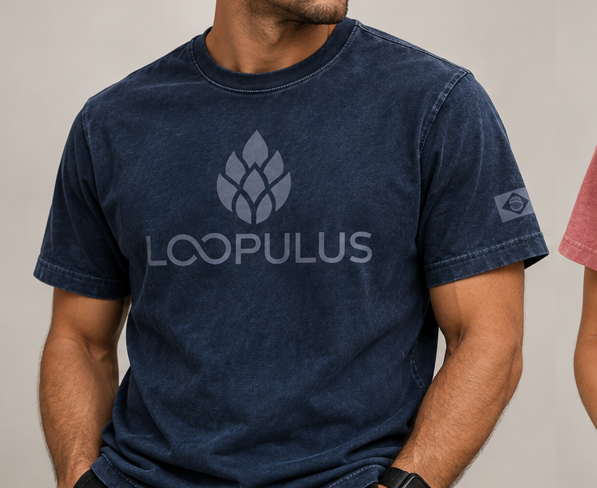

UM NOVO CICLO ESTÁ COMEÇANDO
Vestir
um ciclo.
Uma nova forma de pensar roupas: essencial, consciente e feita para durar.
100% algodão orgânico · produzido em Santa Catarina · design minimalista

01 / FIRST PIECE
01 — MANIFESTO
Não queremos fazer mais uma camiseta.
Queremos fazer uma peça que tenha sentido antes mesmo de ser vestida.
01
ORGÂNICO
Algodão orgânico nacional, escolhido para unir conforto, qualidade e uma cadeia mais consciente.
02
LOCAL
Desenvolvido e produzido em Santa Catarina, aproximando quem cria de quem fabrica.
03
ESSENCIAL
Formas limpas, cores atemporais e uma identidade que não precisa gritar para ser percebida.
THE FIRST LOOP
Uma peça.
Um começo.
O primeiro capítulo da Loopulus nasce em duas cores estonadas e com uma linguagem visual monocromática, marcada diretamente no tecido.
100% ALGODÃO ORGÂNICO
ESTAMPARIA A LASER
MADE IN SC
◈
LOOPULUS
A HISTÓRIA ESTÁ COMEÇANDO
Em breve.
Entre no ciclo.
QUERO SABER PRIMEIRO ↗